罐式收油系统
适用小流量需求（≤30 m³/h），可撬装，到客户现场直接连接管路即可使用。
强纶收油系统（FTS 功能纤维除油系统）以公司自产的亲油疏水金属纤维为聚结材料，通过「前置过滤器 + 油水分离器」实现高效油水分离，广泛用于镍钴湿法冶金、化工萃取等工艺的溶液除油与油份回收。
一句话定义：用改性金属纤维把微米级乳化油「抓住、养大、浮走」的预除油成套设备，不加破乳药剂、不产生化学污泥。
前置过滤器去除液体中的杂质，保证后续油水分离装置不被堵塞或损坏；油水分离器通过特殊纤维捕捉油珠，油珠在纤维表面不断聚结变大后顺液体排出、快速上浮，进入上部储油腔定期排出，除油后的液体从出液口排出。分离出的油份可直接回收使用。
适用小流量需求（≤30 m³/h），可撬装，到客户现场直接连接管路即可使用。
适用大流量应用场景，占地更紧凑，投资成本更低。
利用原有澄清槽 / 槽体改造，降低投资、快速投用。
| 参数项 | 数据 |
|---|---|
| 单套处理量 | 罐式 ≤30 m³/h；槽式 / 槽体改造按需设计；目前最大单套 600 m³/h |
| 适用溶液 | 硫酸钴溶液、硫酸镍溶液等萃取工艺料液 |
| 除油率 | 70%（衢州 15 m³/h 项目，稳定运行 3 年） |
| 出口含油量 | 5—30 mg/L（视工况） |
| 占地 | 约为每小时处理量的 1/3—2/3 |
| 核心材料寿命 | 长期使用，最长应用 5 年未更换 |
| 投资回收 | 镍钴行业应用证明 1—2 年 |
收油系统定位于「预除油」环节：以最低运行成本将非溶解油去除并回收使用，从而降低后续深度除油的消耗成本。
| 对比项 | 静置 | 气浮 | 阻拦聚结 | 强纶除油 |
|---|---|---|---|---|
| 原理 | 长时间静置使油份自然上浮 | 结合静置，通过微小气泡增加上浮速度 | 对油份起拦截作用，油珠碰撞长大后逆液体上浮 | 特殊纤维捕捉油珠，油珠在纤维上长大后顺液体排出、快速上浮 |
| 非溶解油分离效果 | 差 | 一般 | 好 | 最佳 |
| 设备投资 | 少 | 较少 | 一般 | 一般（相比深度除油设备少很多） |
| 占地面积 | 大 | 中等 | 中等（易油份穿透，常需串联多级） | 小（约为每小时处理量的 1/3—2/3） |
| 运行成本 | 低 | 较高 | 较高（组件约 1 年更换或定期拆洗） | 低（除油组件无需更换，可一直使用） |
| 核心材料 | 无 | 无 | 纤维球、聚结树脂、化学纤维滤芯 | 表面改性的金属 / 化学滤芯 |
| 核心材料寿命 | 无 | 无 | 1 年左右（除油效果持续衰减） | 长期使用（最长应用 5 年未更换） |
油水分离通常分「预除油」与「深度除油」两个环节：预除油以最低运行成本去除并回收非溶解油；深度除油（吸附树脂、活性炭、蒸发、催化氧化等）保证液体指标合格。根据萃取剂、混合方式与工艺不同，溶解度一般在 5—40 ppm。
按处理量与现场条件分为槽式、罐式与配套三类部署方式，以下为部分已投运项目。
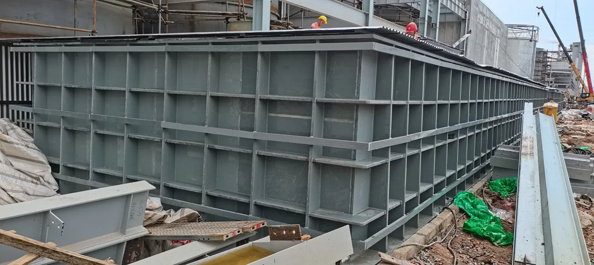
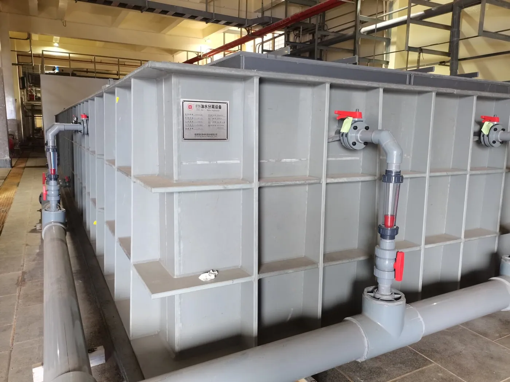
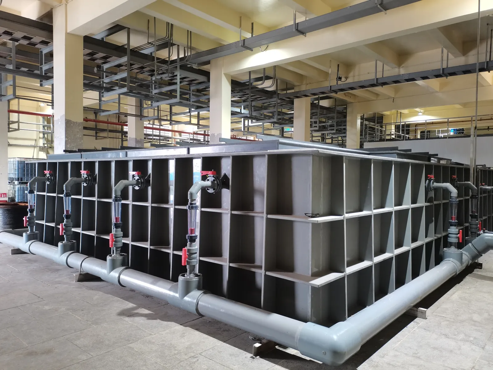
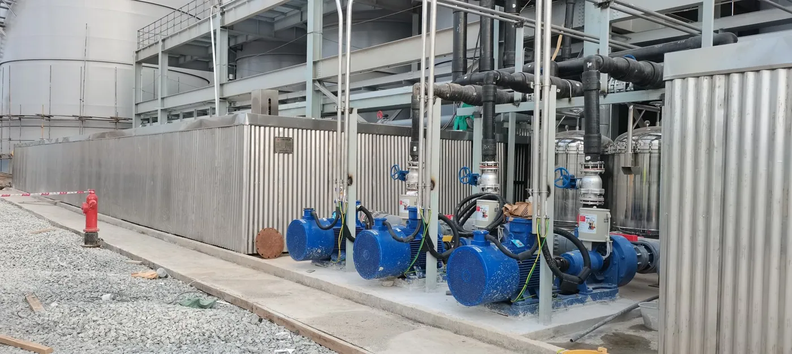
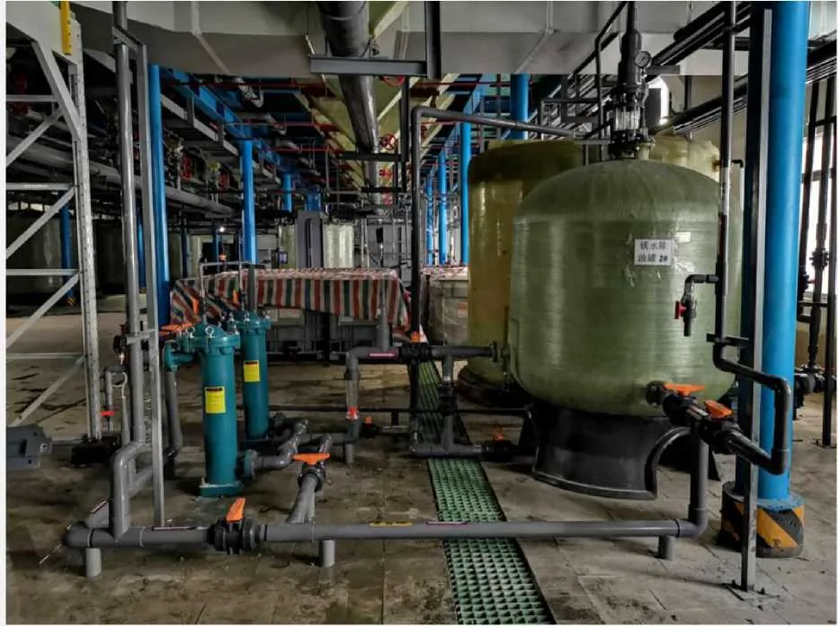
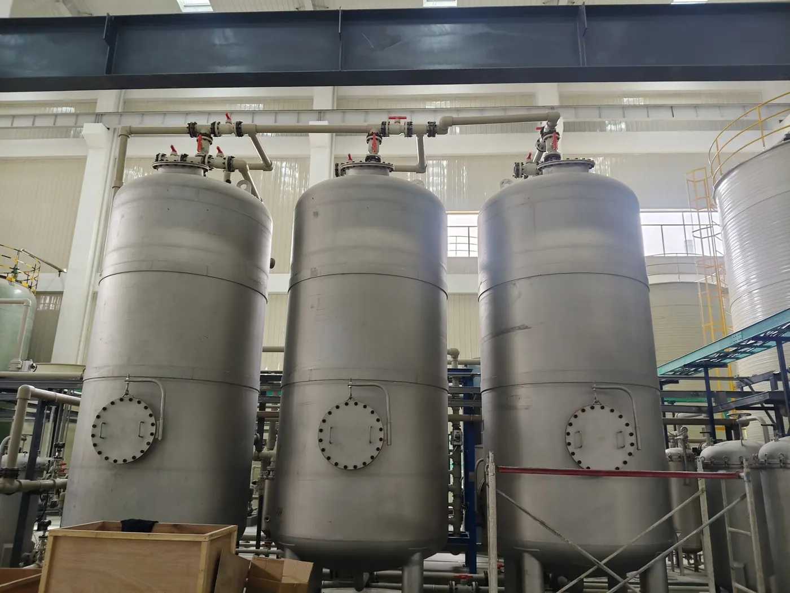
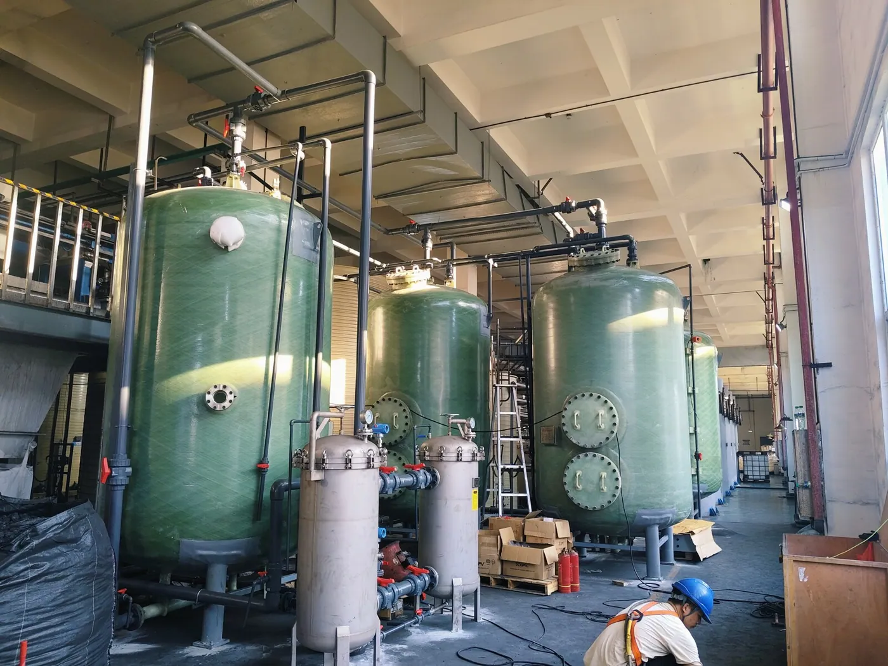
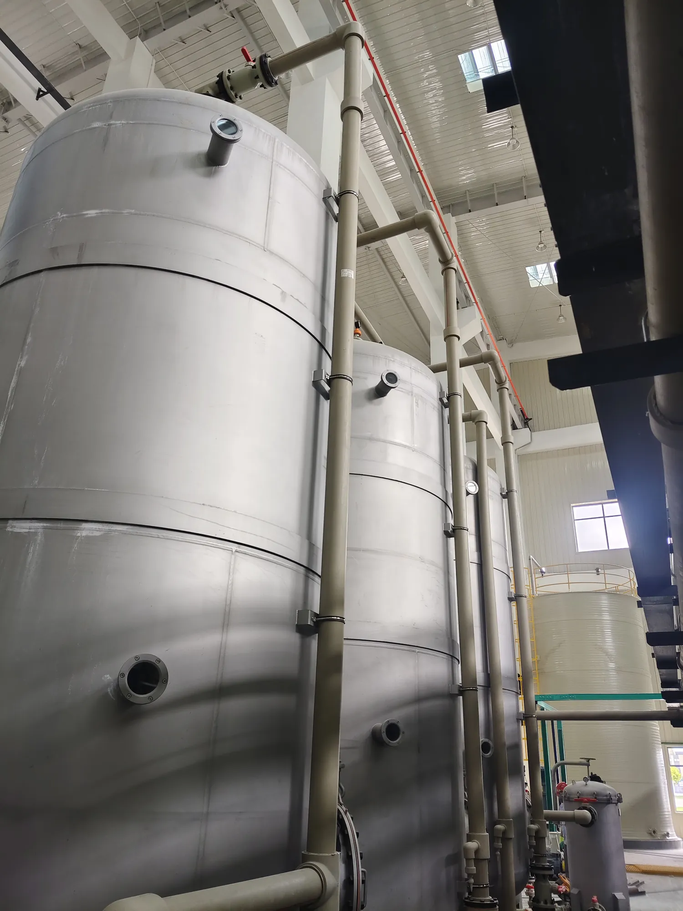

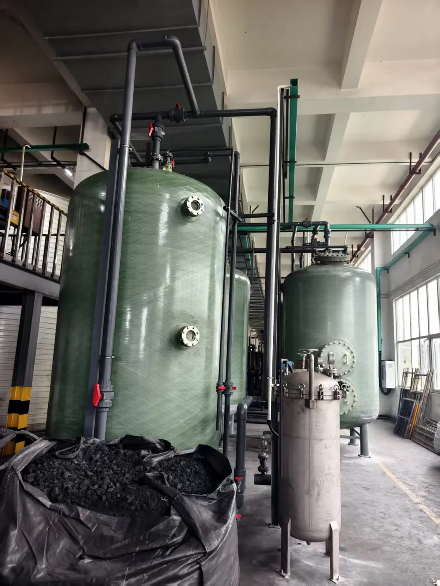
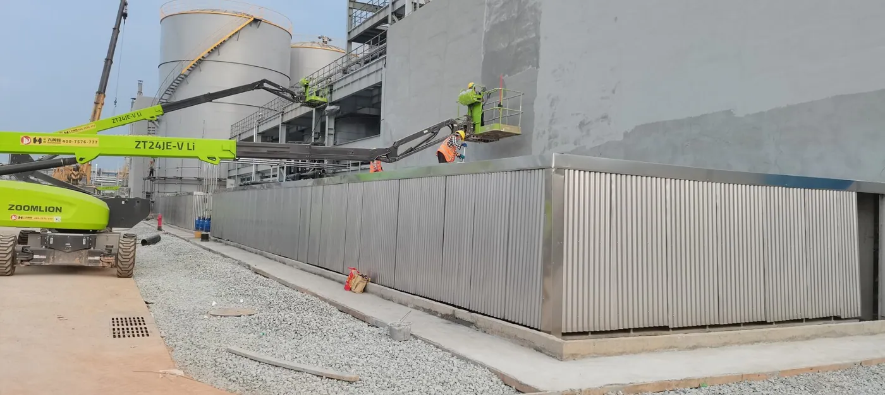
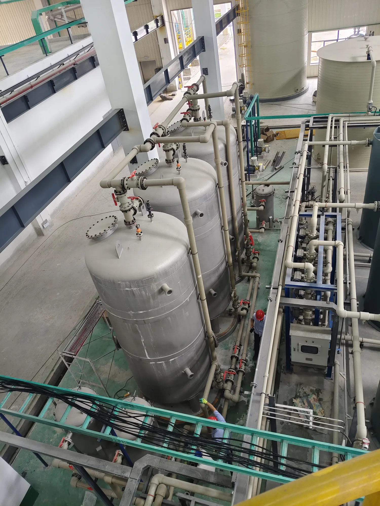
罐体、槽体与内件自厂加工组装，整机出厂前完成试压与试运行，撬装机组到场接管即可投用。
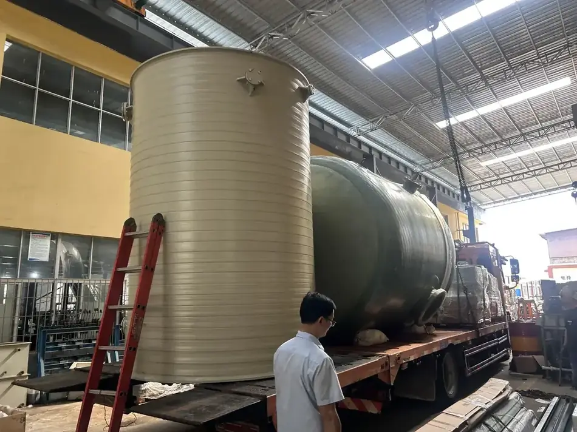
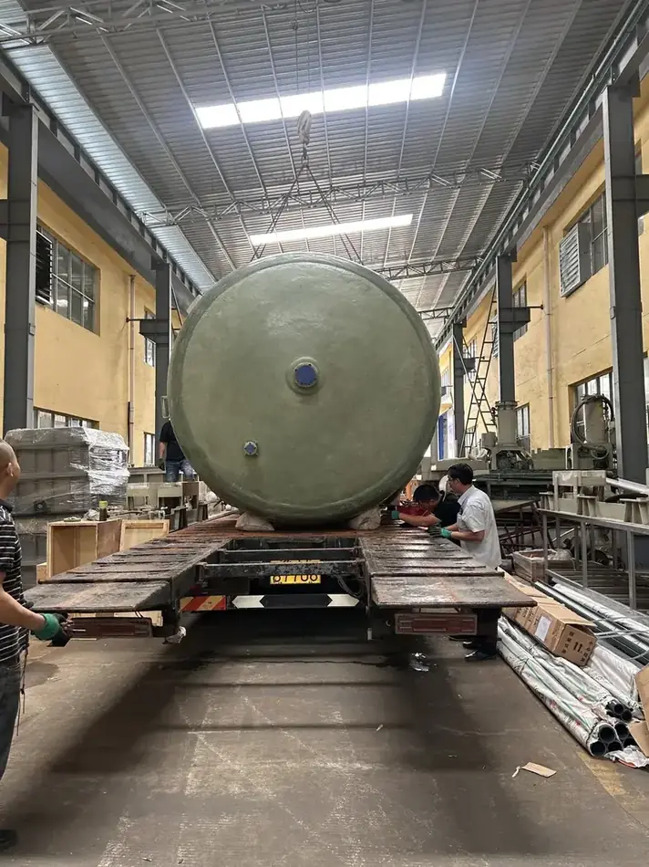
已为新能源与有色冶炼行业 20 余家企业提供收油系统及过滤服务。
| 客户 | 配置 / 通量 |
|---|---|
| 广东芳源环保股份有限公司 | 2 套 15 m³/h 收油系统 |
| 福建常青新能源科技有限公司 | 2 套 1 m³/h；1 套 2.5 m³/h 槽体改造 |
| 衢州华友钴新材料有限公司 | 1 套 15、2 套 100、1 套 40、1 套 240（槽体改造）、1 套 180、1 套 80 m³/h |
| 衢州华友资源再生有限公司 | 1 套 8 m³/h；1 套 30 m³/h 槽体改造 |
| 山东烟台凯实工业有限公司 | 1 套 15 m³/h |
| 江苏天能新材料有限公司 | 5 套收油系统 |
| 常熟市滨江化工有限公司 | 1 套 0.35 m³/h |
| 江西铜业集团有限公司 | 1 套 8 m³/h |
| 福建紫金铜业有限公司 | 1 套 10 m³/h 过滤机 |
| 江苏强盛功能化学股份有限公司 | 2 套 0.35 m³/h；功能纤维收油系统 |
| 广西巴莫科技有限公司 | 160 m³/h 收油系统 |
| 广西华友新材料有限公司 | 600 m³/h 收油系统 |
| 汉中锌业有限责任公司 | 1 套 5 m³/h |
| 中国恩菲工程技术有限公司 | 1 套 10、1 套 60 m³/h |
| 格林美股份有限公司 | 1 套 60 m³/h |
| 青海超频三新材料有限公司 | 2 套 50+5 m³/h |
| 湖北睿派新能源科技有限公司 | 1 套 38 m³/h 活性炭收油系统 |
| 郑州天一萃取科技有限公司 | 2 套 1+2 m³/h |
| 河南荣佳钪钒科技有限公司 | 1 套 60 m³/h 槽体改造 |
| 湖南邦普循环科技有限公司 | 功能纤维收油系统 |
| 江苏凯实金桥新材料有限公司 | 7 套共 480 方 |
| 攀枝花市山青钒业有限公司 | 8 m³/h 反萃液收油系统 |
| 金昌神泥科技有限公司 | 1 套 6 m³/h |
| 江西佳纳能源科技有限公司 | 1 套 25 m³/h |
* 以上为公开可披露的合作信息，具体工艺参数与方案细节依保密约定不予展示。
按处理量：小流量（≤30 m³/h）优先罐式收油系统，可撬装、即插即用；大流量工况采用槽式，占地更紧凑、投资更低；已有澄清槽 / 槽体可利用时，选槽体改造方案降低投资。
按溶液与工艺：针对硫酸钴、硫酸镍等萃取工艺溶液，结合溶解度（一般 5—40 ppm）判断「预除油 + 深度除油」的组合方案。
按工况定制：根据客户需求与现场实际完成个性化匹配设计；液体情况复杂的客户，可免费提供前期实验设备及技术人员入厂试验。
强纶收油系统是功能纤维除油系统，通过前置过滤器与油水分离器实现油水分离，用于去除工艺溶液中的非溶解油并回收油份，定位于预除油环节。
强纶除油对非溶解油分离效果好、占地面积小（约为每小时处理量的 1/3—2/3）、运行成本低，核心除油组件无需更换、可长期使用（最长应用 5 年未更换）。
以衢州 15 m³/h 项目为例，硫酸钴溶液除油率稳定在 70%，已使用 3 年；不同工况出口含油量一般在 5—30 mg/L 区间。
罐式适用 ≤30 m³/h 的小流量需求；槽式及槽体改造方案适用于大流量场景，目前最大单套处理量 600 m³/h。
不需要频繁更换。核心材料为表面改性的金属/化学滤芯，可长期使用；与阻拦聚结类组件（约 1 年更换）相比运行成本更低。
镍钴行业应用证明，1—2 年即可回收设备投资成本。
设备运行简单，几乎不需要专人管理；公司同时提供设备保养、更换滤芯等后续维护及维修服务。
支持根据客户需求和现场实际情况完成个性化匹配设计；针对液体情况复杂的客户，免费提供前期收油系统实验设备及专业技术人员入厂试验。
预除油以最低运行成本去除并回收非溶解油，降低后续深度除油（活性炭、树脂等）的消耗；再通过深度除油去除溶解油以保证指标合格，是最具普适性和经济效益的油水分离方式。
可提供检验报告；报告类型与检测项目见检测能力页，具体以订单约定为准。